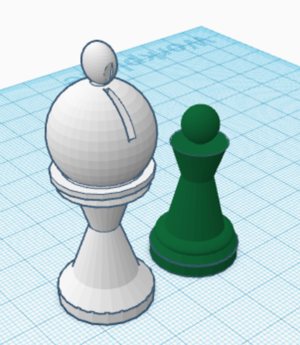
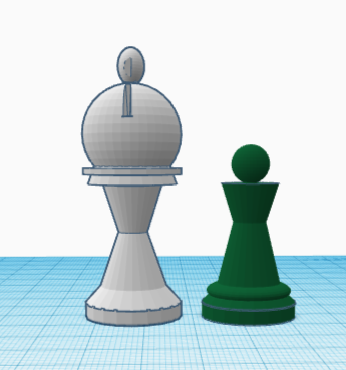
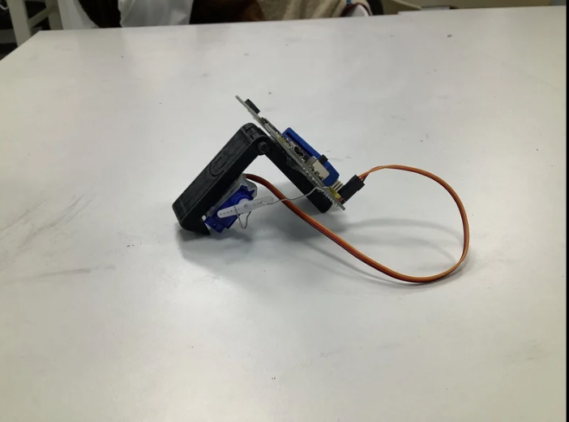
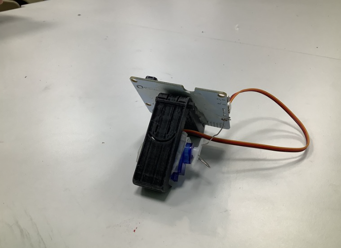
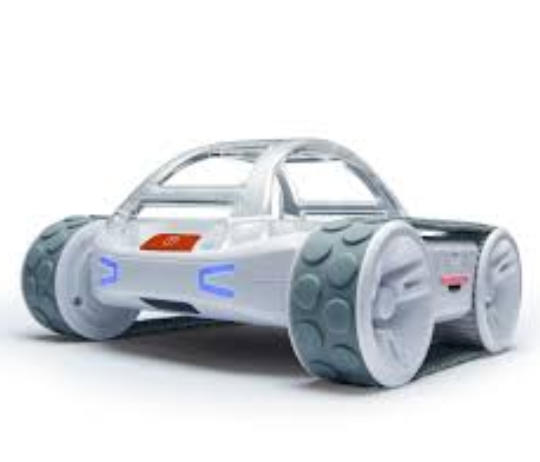

Chess piece project


I made chess pieces in TinkerCad. The chess pieces that I made was a Pawn and a bishop. TinkerCad is 3D modeling software. In this project I used good measurements. The struggle I had in this project was making to top of the chess piece because I had to make a lot of holes the cut off.
Worm


I made worm in TinkerCad and I made the code for the servo. The code for the servo was easy we just had to to a change the angle 180 degrees. The hard part was making the worm in TinkerCad. The hinge was the most difficult to make. The other proplem was that when we printed the worm the worm was so small. Next time if I do it again I would change the size of the worm.
Sphero obstcle course
